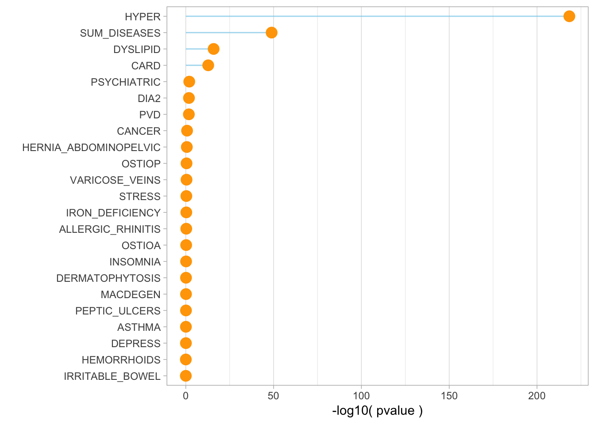

This document applies the gsmr tool to our data: is blood pressure causal to one of the 15 diseases?
1 - Data
To run a GSMR analysis we need:
A risk factor GWAS summary statistics. This file has been created for diastolic pressure in the GWAS part. I can read it here:
/home/y.holtz/BLOOD_GWAS/1_GWAS/GWAS_blood_pressure.maGWAS summary statistics for diseases we want to explain. I’m gonna consider several sources of information:
23 diseases comming from a meta-analysis of the UKBiobank and the GERA consortium. Available online here. Diseases available are: allergic rhinitis, asthma, cancer ,card depress, dermatophytosis, dia2, dyslipid, hemorrhoids, hernia_abdominopelvic, hyper, insomnia, iron deficiency, irritable bowel, macdegen, ostioa, ostiop, peptic_ulcers, psychiatric, pvd stress, sum diseases, varicose veins). File available here on Inode:
ibscratch/users/uqzzhu1/dataset/formatted_meta/combined_ukb_gera*66 other diseases already used in the GSMR paper by Zhihong et al. These include Alzheimer, depression, neuroticsm, Schizophrenia, Type II Diabete and others. File available here:
ibscratch/users/uqzzhu1/dataset/formatted_meta/
# First transfert localy
cd /Users/y.holtz/Desktop
scp uqyholtz@inode.qbi.uq.edu.au://ibscratch/users/uqzzhu1/dataset/formatted_meta/* .
# Then from locally to delta
cd /Users/y.holtz/Desktop
scp * y.holtz@delta.imb.uq.edu.au:/shares/compbio/Group-Wray/YanHoltz/GWAS_SUMSTATI need to reformat these files to respect the GSMR input format:
cd /shares/compbio/Group-Wray/YanHoltz/GWAS_SUMSTAT
# Put that in a script
for i in $(ls *gz) ; do
echo $i
name=$(echo $i | sed 's/.gz//')
zcat $i | cut -d" " -f2,4,5,7,8,9,10,11 > $name
done
qsubshcom "bash script_clean.sh" 1 20G GSMRrun 10:00:00 ""
rm *gz2 - Run GSMR
# Go to the good folder
cd /home/y.holtz/BLOOD_GWAS/3_GSMR
# Prepare a file that gives the location of every bfile (one per chromosome)
ls /gpfs/gpfs01/polaris/Q0286/UKBiobank/v2EURu_HM3/ukbEURu_imp_chr*_v2_HM3_QC.bed | sed 's/.bed//' > gsmr_ref_data.txt
# prepare a file that gives the link to the GWAS result for the risk factor
echo "blood_pressure /home/y.holtz/BLOOD_GWAS/1_GWAS/GWAS_blood_pressure.ma" > gsmr_exposure.txt
# prepare a file that gives the link to the GWAS result for the outcomes
for i in $(ls /shares/compbio/Group-Wray/YanHoltz/*) ; do a=$(echo $i | sed 's/.*gera_//' | sed 's/_1000g.*//') ; echo $a $i ; done > gsmr_outcome.txt
# run the program
tmp_command="gcta64 --mbfile gsmr_ref_data.txt --gsmr-file gsmr_exposure.txt gsmr_outcome.txt --gsmr-alg 0 --out gsmr_result_bloodPressure"
qsubshcom "$tmp_command" 1 20G GSMRrun 10:00:00 ""
3 - Results
First I transfert the result locally for further analysis.
# Then from locally to delta
cd /Users/y.holtz/Dropbox/QBI/4_UK_BIOBANK_GWAS_PROJECT/VitaminD-GWAS/0_DATA
scp y.holtz@delta.imb.uq.edu.au:/home/y.holtz/BLOOD_GWAS/3_GSMR/gsmr_result_bloodPressure.gsmr .Read it in R and show it:
gsmr=read.table("0_DATA/gsmr_result_bloodPressure.gsmr", header = T)
gsmrA barplot of the pvalues.
library(tidyverse)
gsmr %>%
arrange(desc(p)) %>%
mutate(Outcome=factor(Outcome, Outcome)) %>%
ggplot( aes(x=Outcome, y=-log10(p))) +
geom_segment( aes(x=Outcome, xend=Outcome, y=-log10(p), yend=0), color="skyblue", alpha=0.7) +
geom_point(size=4, color="orange") +
coord_flip() +
theme_light() +
theme( panel.grid.major.y = element_blank()) +
ylab("-log10( pvalue )") +
xlab("")
Have a look to the bxy: the effect of the risk factor on the disease:
gsmr %>%
arrange(desc(p)) %>%
mutate(Outcome=factor(Outcome, Outcome)) %>%
mutate(significance=ifelse(p<0.05, "signif", "nonSignif")) %>%
ggplot( aes(x=Outcome, y=bxy)) +
geom_hline( yintercept=0 ) +
geom_segment( aes(x=Outcome, xend=Outcome, y=bxy-se, yend=bxy+se), color="skyblue", alpha=0.7) +
geom_point(aes(color=significance), size=4) +
scale_color_manual( values=c("grey", "orange")) +
coord_flip() +
theme_light() +
theme( panel.grid.major.y = element_blank()) +
ylab("-log10( pvalue )") +
xlab("")
Et yo
A work by Yan Holtz
Yan.holtz.data@gmail.com